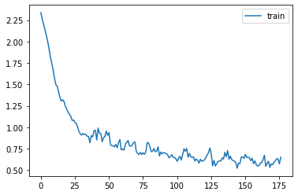

class Learner:
def __init__(self, model, dls, loss_func, lr, opt_func=optim.SGD): fc.store_attr()
def one_batch(self):
self.xb,self.yb = self.batch
self.preds = self.model(self.xb)
self.loss = self.loss_func(self.preds, self.yb)
if self.model.training:
self.loss.backward()
self.opt.step()
self.opt.zero_grad()
with torch.no_grad(): self.calc_stats()
def calc_stats(self):
acc = (self.preds.argmax(dim=1)==self.yb).float().sum()
self.accs.append(acc)
n = len(self.xb)
self.losses.append(self.loss*n)
self.ns.append(n)
def one_epoch(self, train):
self.model.training = train
dl = self.dls.train if train else self.dls.valid
for self.num,self.batch in enumerate(dl): self.one_batch()
n = sum(self.ns)
print(self.epoch, self.model.training, sum(self.losses).item()/n, sum(self.accs).item()/n)
def fit(self, n_epochs):
self.accs,self.losses,self.ns = [],[],[]
# self.model.to(def_device)
self.opt = self.opt_func(self.model.parameters(), self.lr)
self.n_epochs = n_epochs
for self.epoch in range(n_epochs):
self.one_epoch(True)
with torch.no_grad(): self.one_epoch(False)Optimizer
Optimizer (params, lr=0.5)
Initialize self. See help(type(self)) for accurate signature.
from datasets import load_dataset,load_dataset_builder
x,y = 'image','label'
name = "fashion_mnist"
dsd = load_dataset(name)Downloading and preparing dataset fashion_mnist/fashion_mnist to /home/runner/.cache/huggingface/datasets/fashion_mnist/fashion_mnist/1.0.0/8d6c32399aa01613d96e2cbc9b13638f359ef62bb33612b077b4c247f6ef99c1...
Dataset fashion_mnist downloaded and prepared to /home/runner/.cache/huggingface/datasets/fashion_mnist/fashion_mnist/1.0.0/8d6c32399aa01613d96e2cbc9b13638f359ef62bb33612b077b4c247f6ef99c1. Subsequent calls will reuse this data.Downloading builder script: 0%| | 0.00/4.83k [00:00<?, ?B/s]Downloading builder script: 100%|##########| 4.83k/4.83k [00:00<00:00, 4.03MB/s]
Downloading metadata: 0%| | 0.00/3.13k [00:00<?, ?B/s]Downloading metadata: 100%|##########| 3.13k/3.13k [00:00<00:00, 2.73MB/s]
Downloading readme: 0%| | 0.00/8.85k [00:00<?, ?B/s]Downloading readme: 100%|##########| 8.85k/8.85k [00:00<00:00, 6.78MB/s]
Downloading data files: 0%| | 0/4 [00:00<?, ?it/s]
Downloading data: 0%| | 0.00/26.4M [00:00<?, ?B/s]
Downloading data: 6%|6 | 1.68M/26.4M [00:00<00:01, 16.7MB/s]
Downloading data: 21%|## | 5.51M/26.4M [00:00<00:00, 29.4MB/s]
Downloading data: 48%|####8 | 12.8M/26.4M [00:00<00:00, 49.3MB/s]
Downloading data: 81%|########1 | 21.4M/26.4M [00:00<00:00, 63.9MB/s]Downloading data: 100%|##########| 26.4M/26.4M [00:00<00:00, 57.7MB/s]
Downloading data files: 25%|##5 | 1/4 [00:01<00:04, 1.61s/it]
Downloading data: 0%| | 0.00/29.5k [00:00<?, ?B/s]Downloading data: 100%|##########| 29.5k/29.5k [00:00<00:00, 2.18MB/s]
Downloading data files: 50%|##### | 2/4 [00:02<00:02, 1.13s/it]
Downloading data: 0%| | 0.00/4.42M [00:00<?, ?B/s]
Downloading data: 20%|## | 888k/4.42M [00:00<00:00, 8.66MB/s]
Downloading data: 61%|###### | 2.69M/4.42M [00:00<00:00, 14.1MB/s]Downloading data: 100%|##########| 4.42M/4.42M [00:00<00:00, 16.6MB/s]
Downloading data files: 75%|#######5 | 3/4 [00:04<00:01, 1.36s/it]
Downloading data: 0%| | 0.00/5.15k [00:00<?, ?B/s]Downloading data: 100%|##########| 5.15k/5.15k [00:00<00:00, 4.97MB/s]
Downloading data files: 100%|##########| 4/4 [00:04<00:00, 1.12s/it]Downloading data files: 100%|##########| 4/4 [00:04<00:00, 1.19s/it]
Extracting data files: 0%| | 0/4 [00:00<?, ?it/s]Extracting data files: 25%|##5 | 1/4 [00:00<00:00, 3.23it/s]Extracting data files: 100%|##########| 4/4 [00:00<00:00, 10.97it/s]
Generating train split: 0%| | 0/60000 [00:00<?, ? examples/s]Generating train split: 0%| | 1/60000 [00:00<2:43:32, 6.11 examples/s]Generating train split: 1%|1 | 607/60000 [00:00<00:21, 2825.66 examples/s]Generating train split: 2%|1 | 1059/60000 [00:00<00:16, 3500.87 examples/s]Generating train split: 3%|2 | 1683/60000 [00:00<00:12, 4492.08 examples/s]Generating train split: 4%|3 | 2280/60000 [00:00<00:11, 4994.49 examples/s]Generating train split: 5%|4 | 2906/60000 [00:00<00:10, 5404.56 examples/s]Generating train split: 6%|5 | 3502/60000 [00:00<00:10, 5580.66 examples/s]Generating train split: 7%|6 | 4100/60000 [00:00<00:09, 5700.59 examples/s]Generating train split: 8%|7 | 4724/60000 [00:00<00:09, 5863.18 examples/s]Generating train split: 9%|8 | 5321/60000 [00:01<00:09, 5891.11 examples/s]Generating train split: 10%|9 | 5946/60000 [00:01<00:09, 5998.02 examples/s]Generating train split: 11%|#1 | 6860/60000 [00:01<00:08, 6030.95 examples/s]Generating train split: 13%|#2 | 7774/60000 [00:01<00:08, 6050.11 examples/s]Generating train split: 14%|#4 | 8685/60000 [00:01<00:08, 6054.62 examples/s]Generating train split: 16%|#6 | 9600/60000 [00:01<00:08, 6063.21 examples/s]Generating train split: 18%|#7 | 10516/60000 [00:01<00:08, 6072.59 examples/s]Generating train split: 19%|#9 | 11426/60000 [00:02<00:08, 6067.17 examples/s]Generating train split: 21%|## | 12335/60000 [00:02<00:07, 6062.52 examples/s]Generating train split: 22%|##1 | 12957/60000 [00:02<00:07, 6095.27 examples/s]Generating train split: 23%|##3 | 13872/60000 [00:02<00:07, 6095.64 examples/s]Generating train split: 25%|##4 | 14783/60000 [00:02<00:07, 6085.27 examples/s]Generating train split: 26%|##6 | 15694/60000 [00:02<00:07, 6080.02 examples/s]Generating train split: 27%|##7 | 16314/60000 [00:02<00:07, 6063.35 examples/s]Generating train split: 28%|##8 | 16937/60000 [00:02<00:07, 6101.61 examples/s]Generating train split: 30%|##9 | 17846/60000 [00:03<00:06, 6082.10 examples/s]Generating train split: 31%|###1 | 18753/60000 [00:03<00:06, 6067.07 examples/s]Generating train split: 33%|###2 | 19662/60000 [00:03<00:06, 6060.75 examples/s]Generating train split: 34%|###4 | 20566/60000 [00:03<00:06, 6047.13 examples/s]Generating train split: 36%|###5 | 21478/60000 [00:03<00:06, 6053.23 examples/s]Generating train split: 37%|###7 | 22390/60000 [00:03<00:06, 6059.37 examples/s]Generating train split: 38%|###8 | 23000/60000 [00:03<00:06, 6044.82 examples/s]Generating train split: 39%|###9 | 23624/60000 [00:04<00:05, 6089.58 examples/s]Generating train split: 41%|#### | 24541/60000 [00:04<00:05, 6093.74 examples/s]Generating train split: 42%|####2 | 25452/60000 [00:04<00:05, 6082.78 examples/s]Generating train split: 44%|####3 | 26363/60000 [00:04<00:05, 6075.04 examples/s]Generating train split: 45%|####4 | 26992/60000 [00:04<00:05, 6122.47 examples/s]Generating train split: 47%|####6 | 27905/60000 [00:04<00:05, 6105.95 examples/s]Generating train split: 48%|####8 | 28817/60000 [00:04<00:05, 6094.00 examples/s]Generating train split: 50%|####9 | 29731/60000 [00:05<00:04, 6092.65 examples/s]Generating train split: 51%|#####1 | 30645/60000 [00:05<00:04, 6090.03 examples/s]Generating train split: 53%|#####2 | 31555/60000 [00:05<00:04, 6080.95 examples/s]Generating train split: 54%|#####4 | 32462/60000 [00:05<00:04, 6065.57 examples/s]Generating train split: 56%|#####5 | 33370/60000 [00:05<00:04, 6060.25 examples/s]Generating train split: 57%|#####6 | 33997/60000 [00:05<00:04, 6103.71 examples/s]Generating train split: 58%|#####8 | 34907/60000 [00:05<00:04, 6089.02 examples/s]Generating train split: 60%|#####9 | 35815/60000 [00:06<00:03, 6074.11 examples/s]Generating train split: 61%|######1 | 36727/60000 [00:06<00:03, 6072.88 examples/s]Generating train split: 63%|######2 | 37643/60000 [00:06<00:03, 6080.86 examples/s]Generating train split: 64%|######4 | 38558/60000 [00:06<00:03, 6083.56 examples/s]Generating train split: 66%|######5 | 39472/60000 [00:06<00:03, 6083.97 examples/s]Generating train split: 67%|######7 | 40386/60000 [00:06<00:03, 6084.36 examples/s]Generating train split: 68%|######8 | 41000/60000 [00:06<00:03, 6069.44 examples/s]Generating train split: 69%|######9 | 41620/60000 [00:07<00:03, 6100.17 examples/s]Generating train split: 71%|####### | 42537/60000 [00:07<00:02, 6099.48 examples/s]Generating train split: 72%|#######2 | 43450/60000 [00:07<00:02, 6091.86 examples/s]Generating train split: 74%|#######3 | 44364/60000 [00:07<00:02, 6089.56 examples/s]Generating train split: 75%|#######4 | 44992/60000 [00:07<00:02, 6131.70 examples/s]Generating train split: 77%|#######6 | 45906/60000 [00:07<00:02, 6115.61 examples/s]Generating train split: 78%|#######8 | 46822/60000 [00:07<00:02, 6109.32 examples/s]Generating train split: 80%|#######9 | 47735/60000 [00:08<00:02, 6098.78 examples/s]Generating train split: 81%|########1 | 48651/60000 [00:08<00:01, 6099.47 examples/s]Generating train split: 83%|########2 | 49562/60000 [00:08<00:01, 6088.84 examples/s]Generating train split: 84%|########4 | 50473/60000 [00:08<00:01, 6079.45 examples/s]Generating train split: 86%|########5 | 51384/60000 [00:08<00:01, 6073.44 examples/s]Generating train split: 87%|########6 | 52000/60000 [00:08<00:01, 6048.68 examples/s]Generating train split: 88%|########7 | 52623/60000 [00:08<00:01, 6091.12 examples/s]Generating train split: 89%|########9 | 53535/60000 [00:08<00:01, 6084.75 examples/s]Generating train split: 91%|######### | 54444/60000 [00:09<00:00, 6073.72 examples/s]Generating train split: 92%|#########2| 55353/60000 [00:09<00:00, 6065.96 examples/s]Generating train split: 93%|#########3| 55975/60000 [00:09<00:00, 6100.52 examples/s]Generating train split: 95%|#########4| 56882/60000 [00:09<00:00, 6078.79 examples/s]Generating train split: 96%|#########6| 57788/60000 [00:09<00:00, 6062.19 examples/s]Generating train split: 98%|#########7| 58703/60000 [00:09<00:00, 6069.85 examples/s]Generating train split: 99%|#########8| 59312/60000 [00:09<00:00, 6046.56 examples/s]Generating train split: 100%|#########9| 59937/60000 [00:10<00:00, 6095.22 examples/s] Generating test split: 0%| | 0/10000 [00:00<?, ? examples/s]Generating test split: 6%|5 | 579/10000 [00:00<00:01, 5766.55 examples/s]Generating test split: 12%|#1 | 1173/10000 [00:00<00:01, 5867.25 examples/s]Generating test split: 18%|#8 | 1801/10000 [00:00<00:01, 6050.91 examples/s]Generating test split: 27%|##7 | 2717/10000 [00:00<00:01, 6075.54 examples/s]Generating test split: 36%|###6 | 3628/10000 [00:00<00:01, 6069.34 examples/s]Generating test split: 45%|####5 | 4534/10000 [00:00<00:00, 6055.54 examples/s]Generating test split: 54%|#####4 | 5445/10000 [00:00<00:00, 6059.22 examples/s]Generating test split: 64%|######3 | 6361/10000 [00:01<00:00, 6070.39 examples/s]Generating test split: 70%|######9 | 6989/10000 [00:01<00:00, 6118.64 examples/s]Generating test split: 79%|#######8 | 7898/10000 [00:01<00:00, 6094.88 examples/s]Generating test split: 88%|########8 | 8812/10000 [00:01<00:00, 6092.37 examples/s]Generating test split: 97%|#########7| 9724/10000 [00:01<00:00, 6083.95 examples/s] 0%| | 0/2 [00:00<?, ?it/s]100%|##########| 2/2 [00:00<00:00, 419.58it/s]@inplace
def transformi(b): b[x] = [torch.flatten(TF.to_tensor(o)) for o in b[x]]bs = 1024
tds = dsd.with_transform(transformi)dls = DataLoaders.from_dd(tds, bs, num_workers=0)
dt = dls.train
xb,yb = next(iter(dt))
xb.shape,yb[:10](torch.Size([1024, 784]), tensor([8, 2, 2, 9, 6, 4, 4, 6, 7, 9]))m,nh,out = 28*28,50,10
model = nn.Sequential(nn.Linear(m,nh), nn.ReLU(), nn.Linear(nh,out))
learn = Learner(model, dls, F.cross_entropy, lr=0.2)
learn.fit(3)0 True 1.1544134114583333 0.6107833333333333
0 False 1.105757924107143 0.6230571428571429
1 True 0.9187689302884615 0.6803461538461538
1 False 0.9000624441964286 0.6855285714285714
2 True 0.814020703125 0.713905
2 False 0.8054018601190476 0.7165952380952381Callbacks
identity
identity (*args)
Callback
Callback ()
Initialize self. See help(type(self)) for accurate signature.
MetricsCB
MetricsCB (*ms, **metrics)
Initialize self. See help(type(self)) for accurate signature.
ProgressCB
ProgressCB (plot=False)
Initialize self. See help(type(self)) for accurate signature.
to_cpu
to_cpu (x)
CancelEpochException
Common base class for all non-exit exceptions.
CancelBatchException
Common base class for all non-exit exceptions.
CancelFitException
Common base class for all non-exit exceptions.
with_callbacks
with_callbacks (nm)
Initialize self. See help(type(self)) for accurate signature.
Core
Core ()
Initialize self. See help(type(self)) for accurate signature.
MomentumLearner
MomentumLearner (mom=0.85)
Initialize self. See help(type(self)) for accurate signature.
Learner
Learner (model, core, dls, callbacks, loss_func, lr, opt_func=<class 'torch.optim.sgd.SGD'>)
Initialize self. See help(type(self)) for accurate signature.
class LRFinderCB(Callback):
def __init__(self, lr_mult=1.3): fc.store_attr()
def before_fit(self):
self.lrs,self.losses = [],[]
self.min = math.inf
def after_batch(self):
if not self.trainer.model.training: raise CancelEpochException()
self.lrs.append(self.trainer.opt.param_groups[0]['lr'])
loss = self.trainer.loss
self.losses.append(loss)
if loss < self.min: self.min = loss
if loss > self.min*3: raise CancelFitException()
for g in self.trainer.opt.param_groups: g['lr'] *= self.lr_multm,nh,out = 28*28,50,10
model = nn.Sequential(nn.Linear(m,nh), nn.ReLU(), nn.Linear(nh,out))
loss_func=nn.CrossEntropyLoss()metrics = MetricsCB(accuracy=MulticlassAccuracy())
train=Learner(model, Core(), dls, [metrics,ProgressCB(plot=True)],F.cross_entropy,lr=0.2)
train.fit(3)| accuracy | loss | epoch | train |
|---|---|---|---|
| 0.601 | 1.187 | 0 | True |
| 0.726 | 0.764 | 0 | False |
| 0.745 | 0.705 | 1 | True |
| 0.763 | 0.658 | 1 | False |
| 0.780 | 0.615 | 2 | True |
| 0.754 | 0.658 | 2 | False |

Learner?Init signature: Learner(model, dls, loss_func, lr, opt_func=<class 'torch.optim.sgd.SGD'>) Docstring: <no docstring> Type: type Subclasses:
import nbdev; nbdev.nbdev_export()